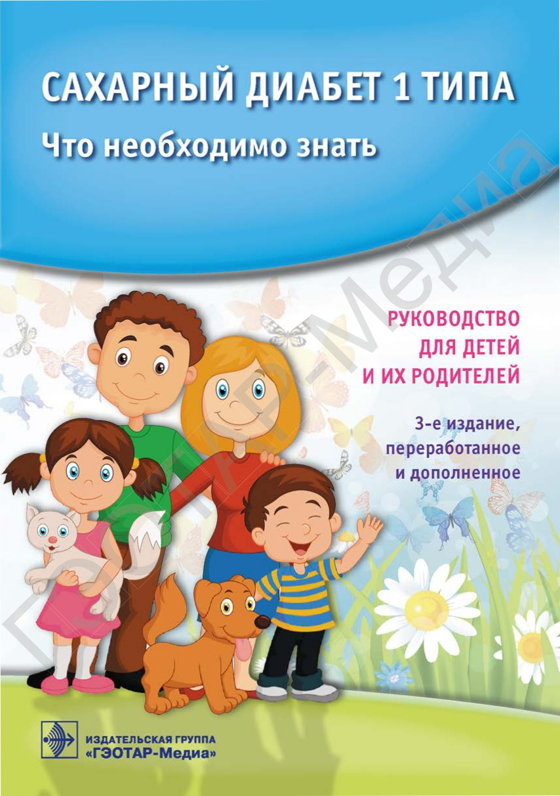
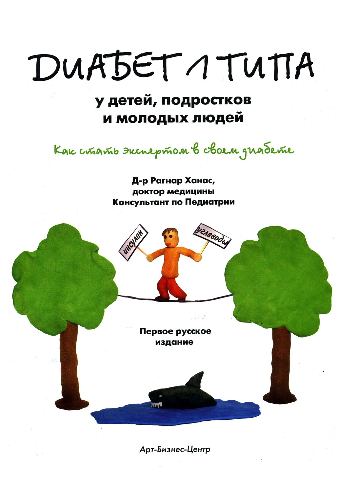
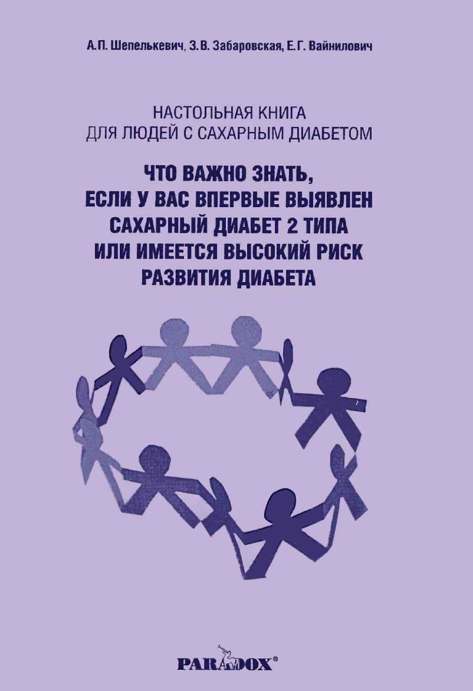

Новичкам
Вашему ребенку поставили диагноз сахарный диабет, назначили лечение, выписали инсулины и готовят к выписке домой. Скорее всего, сейчас Вы чувствуете страх, неуверенность и испытываете ощущение полной беспомощности. Вначале диабет - это тяжело, страшно и непонятно, но, поверьте, так будет не всегда. Каждый из нас это прошел. Мы постарались собрать информацию, которая поможет вам принять и понять ваш новый образ жизни, сделать первые и необходимые шаги.
Давайте сориентируемся, что Вам нужно делать в первые дни.
1. Самое главное сейчас успокоиться, потому что ребёнок не должен видеть Ваши переживания. Ведь ему в эти дни нелегко: он в больнице, а не дома, напуган новыми обстоятельствами, надо постоянно измерять сахар, вводить инсулин и т.д. Вашему ребенку, какой бы он взрослый и самостоятельный не был, важно видеть в Вас поддержку и уверенность в завтрашнем дне.
2. Вы обязательно должны научиться вводить инсулин инсулиновыми шприцами и шприц-ручками, которые Вам позже выдадут в амбулаторном отделении. Даже если Вы никогда раньше не делали уколы, вводить инсулин должны уметь все, кто проживает совместно с ребенком. Ведь Вы должны быть взаимозаменяемы, это позволит Вам без страха оставлять ребенка с родственниками.
3. С первого дня Вам нужны весы. Ведь Вы должны научиться считать еду и рассчитывать, исходя из этого, дозу инсулина.
4. В больнице Вашему ребенку ежедневно (4-6 раз в день, а иногда и больше) измеряют уровень глюкозы в крови. Но мы рекомендуем Вам приобрести глюкометр в аптеке, в набор которого будет входить прокалыватель, в котором Вы сможете контролировать глубину прокола пальчика Вашего ребенка, а это позволит сделать процесс измерения сахара более комфортным и менее болезненным. Для уточнения информации по получению глюкометра бесплатно подойдите к своему лечащему врачу.
5. Важно пройти обучение в Школе диабета. При больницах обычно она проводится. Желательно, чтобы обучение в школе прошла не только мама и ребенок, но и другие близкие родственники.
6. Сейчас у Вашего ребенка нестабильная гликемия и высокий аппетит. Что можно кушать в первые дни, если уровень сахара в крови (гликемия) остается высоким? В первую очередь - овощи (свежие огурцы, помидор, перец, зеленый салат, капуста). Затем - рыба, морепродукты, филе курицы, индейки. Лучше, если это отварено или приготовлено на пару. Сыр, орехи можно, но при гликемии выше 15 ммоль/л от жирных продуктов мы должны воздержаться.
Дневник контроля диабета

Скачать
7. Для знакомства с сахарным диабетом рекомендуют следующую литературу:
Сахарный человек. Все, что вы хотели знать о сахарном диабете 1-го типа.
Авторский коллектив проекта «Правило 15».

Скачать
Сахарный диабет 1 типа. Что необходимо знать. Руководство для детей и их родителей. 3-е изд.
Под редакцией академика РАН В.А. Петерковой и профессора А.Ю. Майорова

Скачать
Инсулиновая помпа. Помощь врачу и пациенту для эффективного управления диабетом.
И.И.Дедов, В.А.Петеркова, Т.Л.Кураева, Д.Н.Лаптев

Скачать
Сахарный диабет 1 типа у детей. Что необходимо знать
А.В.Солнцева, Н.В.Волкова
Скачать
Пособие для новичков с сахарным диабетом
Елена Прошунина

Скачать
Диабет 1 типа у детей, подростков и молодых людей
Ханас Рагнар

Скачать
Настольная книга для людей с сахарным диабетом: что важно знать, если у Вас выявлен сахарный диабет 2 типа.
Авторы: Вайнилович Е.Г., Забаровская З.В., Шепелькевич А.П.

Скачать
Все книги можно найти в интернете и скачать.
В РБ существуют сообщества, объединяющие родителей детей с сахарным диабетом. Рекомедуем присоединиться к ним.
так как никто не поймет ваши проблемы и переживания лучше, чем родители детей с таким же диагнозом.Топ вопросов и ответов для новичков
Откуда взялся мой диабет? В моей семье его ни у кого нет.
Диабет 1 типа — аутоиммунное заболевание. Оно не имеет ничего общего с диетой и образом жизни, и может возникнуть совершенно неожиданно. Учёные считают, что этот тип вызывается срабатыванием генов под воздействием факторов окружающей среды, например, вирусов. Ваши дети могут унаследовать ваши гены. Однако, вероятность возникновения болезни довольно низкая: 2-4% если диабет у мамы (у папы — 10%). Исследования активно ведутся, вы могли слышать о гормоне Фабкин, зависимости от уровня железа и витамина Д.
Я слышала о случаях, когда люди перестали колоть инсулин. Как можно этого достичь?
Скорее всего, речь о так называемом «медовом месяце». Это короткий период после того, как вы начали использовать инсулин. Дозы могут снизиться до минимальных, а некоторые вовсе не используют инсулин несколько месяцев. К сожалению, этот период очень короткий. Уйти с инсулина навсегда не удастся. Постепенно гибель бета-клеток приведёт к полной остановке в производстве инсулина и дозы придётся возвращать и повышать. Есть случаи неверной диагностики: пациенты начинают инсулин, затем отказываются от него.
Когда будет лекарство от диабета?
Точного ответа НЕТ. Вы могли слышать о клеточной терапии в сочетании с CRISPR (редактирование генов), бионических поджелудочных (с глюкагоном) и системах луп — пока это самые вероятные варианты. Если вы слышали, что нас никто не хочет лечить, ибо это невыгодно, то оценка прибыльности по искусственной железе, например, Seraccess — $30 млрд. Нас хотят лечить, это просто сложно!
Почему диабет называют сахарным?
Кроме сахарного диабета существует и не сахарный. Это довольно редкое заболевание, сопровождающееся мочеизнурением и жаждой. Механизмы возникновения, течения и лечения отличны от сахарного диабета.
Возможно ли, что врач ошибся с диагнозом и у меня, на самом деле, другой тип диабета?
Сегодня мы все больше знаем о диабете. Один из таких фактов — это то, что клиническая картина не всегда совпадает с диагнозом. Например, диабет 1 типа может появиться после 40-ка, а диабет второго типа — в детском возрасте. Существуют такие типы СД, как LADA и MODY, которые раньше плохо диагностировались. Существует также «двойной диабет». Поэтому ваш врач может некоторое время наблюдать и корректировать план лечения, подбирая тот, который действительно подойдет. Это не говорит о его некомпетентности. Просто ваш случай может быть не так очевиден, нестандартно протекать.
Обязательно ли принимать инсулин?
Если у вас сахарный диабет 1 типа, то другого способа жить, кроме как принимать инсулин — НЕ СУЩЕСТВУЕТ! Инсулин нужен для того, чтобы клетки тела могли использовать глюкозу в качестве источника энергии. Он также обладает анаболической функцией — помогает строить мышечную и жировую ткань. Даже если не есть, придется использовать инсулин, чтобы обеспечить энергией дыхание, мышление, передвижение.
У меня сильный аппетит. Почему это и что делать?
Чаще всего сильный аппетит можно ощутить при высоких дозах инсулина. Когда вы только начинаете инсулинотерапию, тело адаптируется под нормальный уровень этого гормона. Инсулин провоцирует аппетит. Поэтому старайтесь не есть много сладостей и фруктов, чтобы не перекалывать слишком много. Приводите свои дозы к таким, чтобы они покрывали привычный вам ранее рацион. Если вы будете колоть больше, вам придется больше есть. Аппетит при этом будет соответствующий.
Я начал(а) набирать вес после назначения инсулина. Что делать?
Если до назначения инсулина у вас был недостаточный вес, вполне нормально, что вы наберете массу. Но если вес был нормальным и вы набираете лишние килограммы, это может означать, что дозы для вас слишком велики. Постарайтесь несколько недель вести пищевой дневник и дневник сахара. Проследите, где подколки вызывают гипо и вам приходится подъедать, чтобы сахар не упал. Пересмотрите ваши коэффициенты, чтобы не колоть слишком много и не наедать.
Сахар прыгает. Как его успокоить?
Нестабильность сахара, в принципе, и составляет суть заболевания сахарный диабет. То есть, можно сказать, что прыгать сахар не перестанет никогда. При первом типе диабета уровень сахара очень чувствителен и реагирует на множество факторов, про которые вы могла даже не догадываться. Особая сложность в том, что эти факторы варьируются от человека к человеку. Скажем, у кого-то сахар может сильнее расти на бананы, а у кого-то — от стресса. Кто-то без проблем пьет молоко и есть творог, а кому-то приходится подкалывать инсулин. Поэтому не думайте, что ваш диабет какой-то особенно злой, неправильный. Мы все уникальны, усваиваем еду по-разному. Тело имеет индивидуальную чувствительность к разным инсулинам. И отличается она в зависимости от разных факторов.
На YouTube канале Diadzetka размещены лекции "Школы диабета"